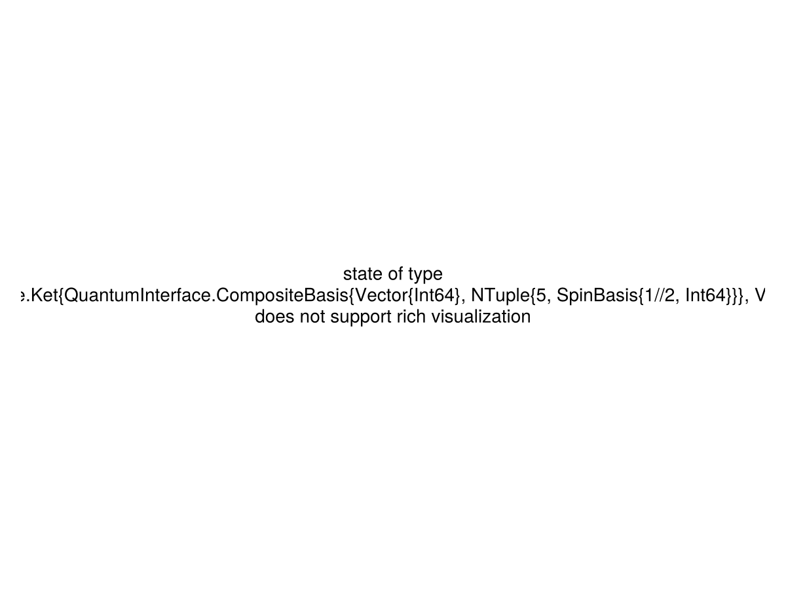
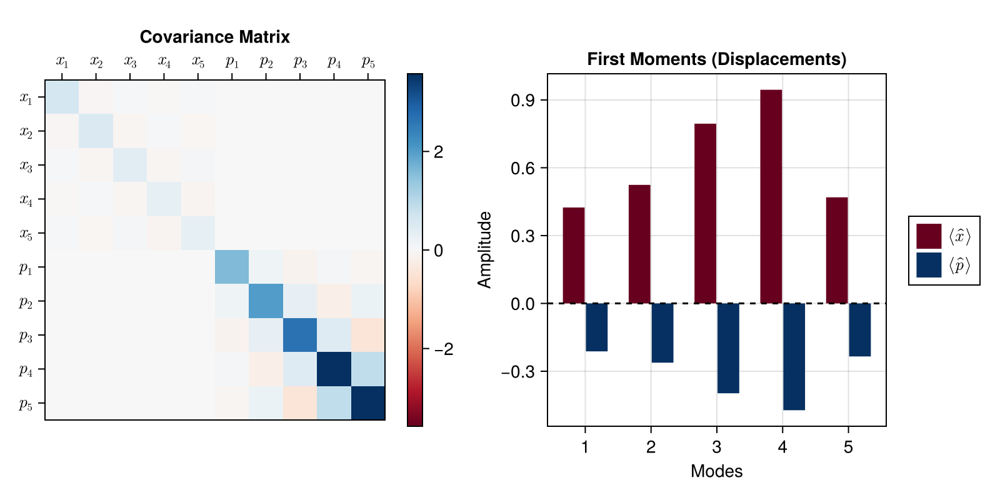
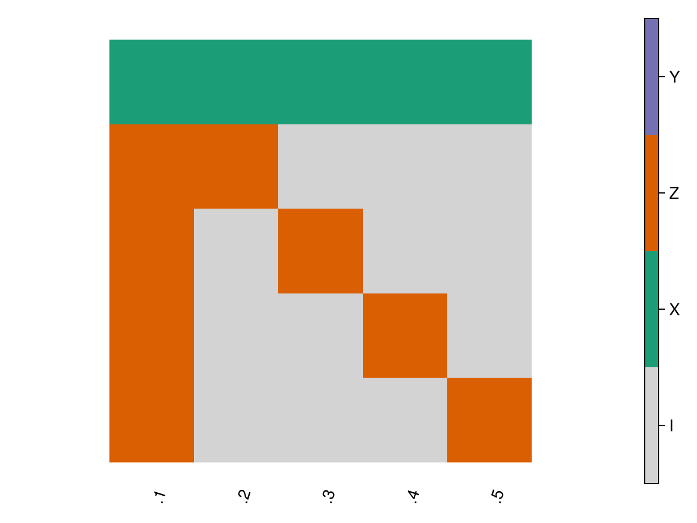

Quantum State Visualization
The quantum states objects in QuantumSavory have a variety of show methods implemented for them. Depending on the IDE you are working in, you will be able to see rich information about the quantum state you are working with, e.g. when accessing it with stateof(network[register_index][slot_index]) or stateof(register[slot_index]).
In particular:
- in Pluto or Jupyter or VS Code you will see the
text/htmlorimage/pngrendering. - in the REPL you will see the
text/plainrendering.
This reference page shows how a five-subsystem StateRef is rendered by the text/plain, text/html, and image/png display backends.
QuantumOptics State
text/plain
State containing 5 subsystems in QuantumOpticsBase implementation
In registers:
11702618353832144582.1
11702618353832144582.2
11702618353832144582.3
11702618353832144582.4
11702618353832144582.5
Ket(dim=32)
basis: [Spin(1/2) ⊗ Spin(1/2) ⊗ Spin(1/2) ⊗ Spin(1/2) ⊗ Spin(1/2)]
0.7071067811865475 + 0.0im
0.0 + 0.0im
0.0 + 0.0im
0.0 + 0.0im
0.0 + 0.0im
0.0 + 0.0im
0.0 + 0.0im
0.0 + 0.0im
0.0 + 0.0im
0.0 + 0.0im
⋮
0.0 + 0.0im
0.0 + 0.0im
0.0 + 0.0im
0.0 + 0.0im
0.0 + 0.0im
0.0 + 0.0im
0.0 + 0.0im
0.0 + 0.0im
0.7071067811865475 + 0.0imtext/html
- 1
- 2
- 3
- 4
- 5
state of type QuantumOpticsBase.Ket{QuantumInterface.CompositeBasis{Vector{Int64}, NTuple{5, SpinBasis{1//2, Int64}}}, Vector{ComplexF64}}
does not support rich visualization in HTML
Ket(dim=32)
basis: [Spin(1/2) ⊗ Spin(1/2) ⊗ Spin(1/2) ⊗ Spin(1/2) ⊗ Spin(1/2)]
0.7071067811865475 + 0.0im
0.0 + 0.0im
0.0 + 0.0im
0.0 + 0.0im
0.0 + 0.0im
0.0 + 0.0im
0.0 + 0.0im
0.0 + 0.0im
0.0 + 0.0im
0.0 + 0.0im
0.0 + 0.0im
0.0 + 0.0im
0.0 + 0.0im
0.0 + 0.0im
0.0 + 0.0im
0.0 + 0.0im
0.0 + 0.0im
0.0 + 0.0im
0.0 + 0.0im
0.0 + 0.0im
0.0 + 0.0im
0.0 + 0.0im
0.0 + 0.0im
0.0 + 0.0im
0.0 + 0.0im
0.0 + 0.0im
0.0 + 0.0im
0.0 + 0.0im
0.0 + 0.0im
0.0 + 0.0im
0.0 + 0.0im
0.7071067811865475 + 0.0im
image/png

Gabs State
text/plain
State containing 5 subsystems in Gabs implementation
In registers:
17864940180418601702.1
17864940180418601702.2
17864940180418601702.3
17864940180418601702.4
17864940180418601702.5
Gaussian State
Modes: 5
Basis: QuadBlockBasis
Purity: 1.0 (Pure State)
Displacement Vector (First Moments):
[0.42426406871192857, 0.5242640687119287, 0.7949747468305834, 0.9449747468305834, 0.4692388155425118, -0.21213203435596428, -0.2621320343559643, -0.3974873734152917, -0.4724873734152917, -0.2346194077712559]
Per-mode Marginals:
Mode 1: Mean = [0.42426, -0.21213] | Var(x) = 0.64481 | Var(p) = 1.58599 | Purity = 0.49443
Mode 2: Mean = [0.52426, -0.26213] | Var(x) = 0.52569 | Var(p) = 2.0228 | Purity = 0.48487
Mode 3: Mean = [0.79497, -0.39749] | Var(x) = 0.41344 | Var(p) = 2.67146 | Purity = 0.47576
Mode 4: Mean = [0.94497, -0.47249] | Var(x) = 0.31829 | Var(p) = 3.57657 | Purity = 0.46862
Mode 5: Mean = [0.46924, -0.23462] | Var(x) = 0.31829 | Var(p) = 3.57657 | Purity = 0.46862text/html
- 1
- 2
- 3
- 4
- 5
5-mode Gaussian state in QuadBlockBasis basis
- Purity
- 1.0 (Pure State)
| First Moments | ||
| ⟨x̂⟩ | ⟨p̂⟩ | |
|---|---|---|
| Mode 1 | 0.42426 | -0.21213 |
| Mode 2 | 0.52426 | -0.26213 |
| Mode 3 | 0.79497 | -0.39749 |
| Mode 4 | 0.94497 | -0.47249 |
| Mode 5 | 0.46924 | -0.23462 |
| Covariance Matrix | ||||||||||
| x₁ | x₂ | x₃ | x₄ | x₅ | p₁ | p₂ | p₃ | p₄ | p₅ | |
|---|---|---|---|---|---|---|---|---|---|---|
| x₁ | 0.644815 | -0.0678846 | 0.0480016 | -0.0339423 | 0.0339423 | 0.0 | 0.0 | 0.0 | 0.0 | 0.0 |
| x₂ | -0.0678846 | 0.525692 | -0.0842324 | 0.0595613 | -0.0595613 | 0.0 | 0.0 | 0.0 | 0.0 | 0.0 |
| x₃ | 0.0480016 | -0.0842324 | 0.413443 | -0.0793721 | 0.0793721 | 0.0 | 0.0 | 0.0 | 0.0 | 0.0 |
| x₄ | -0.0339423 | 0.0595613 | -0.0793721 | 0.318287 | -0.0951565 | 0.0 | 0.0 | 0.0 | 0.0 | 0.0 |
| x₅ | 0.0339423 | -0.0595613 | 0.0793721 | -0.0951565 | 0.318287 | 0.0 | 0.0 | 0.0 | 0.0 | 0.0 |
| p₁ | 0.0 | 0.0 | 0.0 | 0.0 | 0.0 | 1.58599 | 0.166969 | -0.118065 | 0.0834846 | -0.0834846 |
| p₂ | 0.0 | 0.0 | 0.0 | 0.0 | 0.0 | 0.166969 | 2.0228 | 0.308869 | -0.218404 | 0.218404 |
| p₃ | 0.0 | 0.0 | 0.0 | 0.0 | 0.0 | -0.118065 | 0.308869 | 2.67146 | 0.458672 | -0.458672 |
| p₄ | 0.0 | 0.0 | 0.0 | 0.0 | 0.0 | 0.0834846 | -0.218404 | 0.458672 | 3.57657 | 0.905116 |
| p₅ | 0.0 | 0.0 | 0.0 | 0.0 | 0.0 | -0.0834846 | 0.218404 | -0.458672 | 0.905116 | 3.57657 |
image/png

QuantumClifford State
text/plain
State containing 5 subsystems in QuantumClifford implementation
In registers:
15042925095312449524.1
15042925095312449524.2
15042925095312449524.3
15042925095312449524.4
15042925095312449524.5
𝒟ℯ𝓈𝓉𝒶𝒷━
+ Z____
⋮
𝒮𝓉𝒶𝒷━━━
+ XXXXX
⋮text/html
- 1
- 2
- 3
- 4
- 5
state of type QuantumClifford.MixedDestabilizer{QuantumClifford.Tableau{Vector{UInt8}, Matrix{UInt64}}}
does not support rich visualization in HTML
𝒟ℯ𝓈𝓉𝒶𝒷━ + Z____ + _X___ + __X__ + ___X_ + ____X 𝒮𝓉𝒶𝒷━━━ + XXXXX + ZZ___ + Z_Z__ + Z__Z_ + Z___Z
image/png
